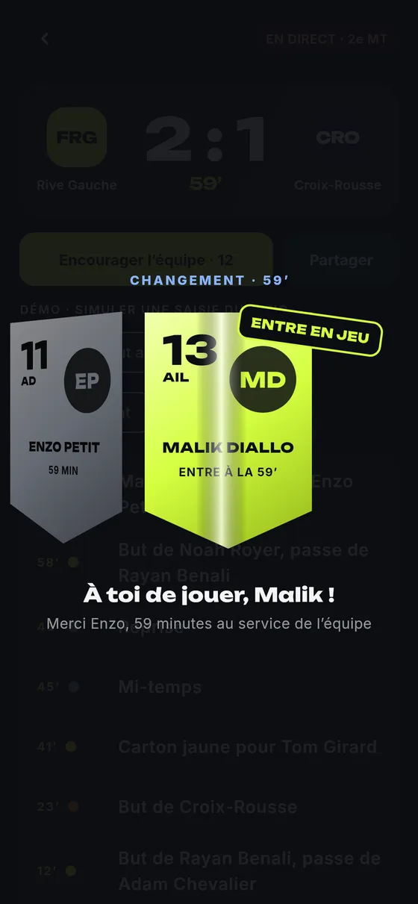
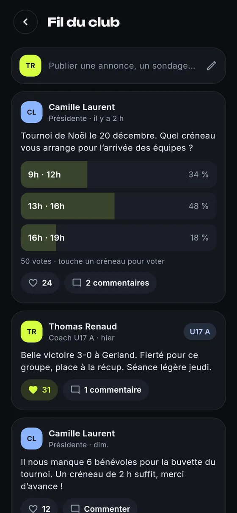
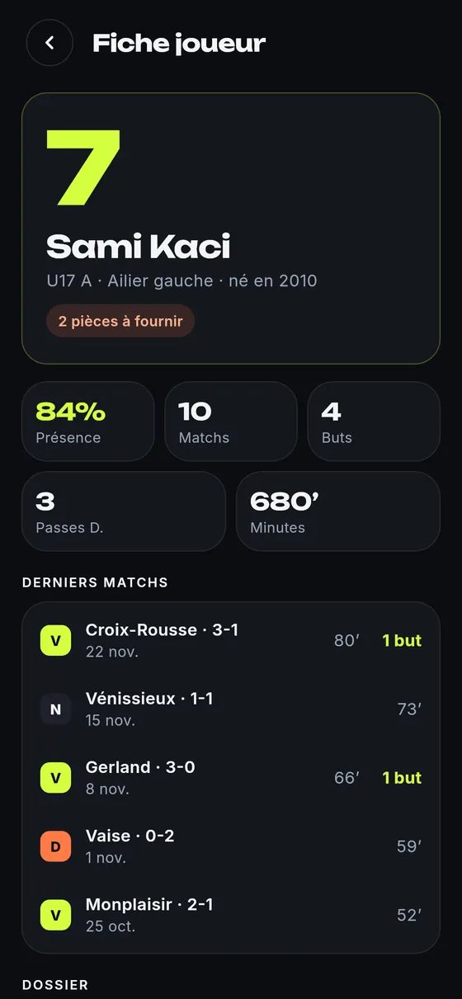

Convocations et covoiturage
Un entraînement récurrent se crée une fois pour la saison. Les familles répondent, proposent une place en voiture et reçoivent un rappel la veille.
Foot · Hand · Basket · Rugby · Volley
Le coach saisit le match depuis le banc. Les parents le vivent en direct, où qu'ils soient. Et toute la semaine, l'app fait vivre le club : convocations, compo, covoiturage, chat encadré.
Sur le terrain · touchez un joueur
8 · Noah Royer
Le banc
U17 A · Rive Gauche – Croix-Rousse
52’ · 2e mi-temps
BUT
FRG 2 : 1 CRO
La tribune
Le match en direct
Deux gestes pour un but, un carton ou un changement. Les parents restés à la maison voient chaque action arriver avec sa séquence animée, le score et le chrono. Après le coup de sifflet, le coach et l'arbitre signent la feuille de match dans l'app.


Compo · Sam. 28 · 15:00
ROYER
FC RIVE GAUCHE · U17 A
Titulaire · milieu gauche · 4-3-3
La compo du samedi

Le récap du dimanche, 18 h
Ce qui fait revenir
Quand le coach publie la compo, chaque joueur découvre sa carte : poste, numéro et une note Volta calculée sur la saison à partir de la présence, des minutes, des buts, des passes et des votes « joueur du match ». Elle monte quand on vient à l'entraînement.
Le dimanche à 18 h, chaque équipe reçoit son récap de la semaine en plein écran : résultats, buteurs, série de présence, joueur du match. Personne n'a besoin d'un e-mail pour ouvrir l'app.
L'organisation du club
Un entraînement récurrent se crée une fois pour la saison. Les familles répondent, proposent une place en voiture et reçoivent un rappel la veille.

L'appel du coach alimente la grille de la saison. Trois absences d'affilée ou une présence qui chute, et le coach est prévenu avant que le joueur ne lâche.

Certificat médical, autorisation de sortie, licence : les familles les envoient depuis leur téléphone, le dirigeant valide et relance d'un geste.

Buteurs, passeurs, minutes jouées, joueurs du match : tout sort des matchs saisis en direct.

Annonces, photos, sondages. Chacun voit ce qui concerne son équipe, et le bureau parle à tout le club d'un coup.

Responsables légaux, pièces, cotisation, présence et stats sur une seule page.
Confiance
Groupe modéré automatiquement
Le chat d'équipe
Sur tablette
Les onglets passent dans une barre latérale, le terrain et le fil du match s'affichent côte à côte. Posée sur le banc, c'est la table de marque du coach.

Football, handball, basket, rugby et volley. Le format du match (durée, périodes, nombre de joueurs, remplacements) dépend du sport et de la catégorie de l'équipe, et le coach peut l'ajuster. Le direct du volley (sets et points) arrive juste après le lancement.
Non. Le club garde son moyen de paiement habituel. Volta indique qui a payé, qui reste à relancer, et envoie les rappels.
Le club partage un code d'invitation. Le code donne le bon rôle (joueur, parent, coach), et un parent inscrit lui-même son enfant.
Sur une base dédiée à Volta. Les fichiers (photos, pièces) sont dans des espaces de stockage privés, et chaque accès passe par des règles vérifiées côté serveur.
Non, tout fonctionne sur téléphone. La tablette est un confort pour le coach au bord du terrain.
Volta arrive sur l'App Store et Google Play.